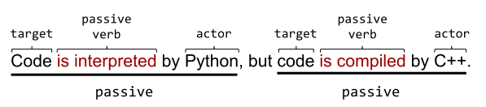
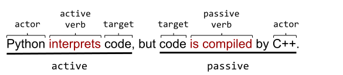
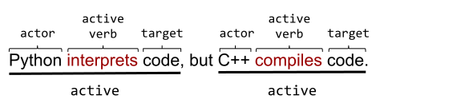

主動語態 vs. 被動語態
預估時間： 15 分鐘
技術寫作中的絕大多數句子都應該使用主動語態。本單元將教您如何做到以下幾點：
- 區分被動語態與主動語態。
- 將被動語態轉換為主動語態，因為主動語態通常更清晰。
區分簡單句中的主動與被動語態
在主動語態的句子中，一個動作者（actor）對一個目標採取行動。也就是說，一個主動語態的句子遵循以下公式：
主動語態句 = 動作者 + 動詞 + 目標被動語態的句子則顛倒了這個公式。也就是說，一個被動語態的句子通常遵循以下公式：
被動語態句 = 目標 + 動詞 + 動作者主動語態範例
例如，這是一個簡短的主動語態句子：
The cat sat on the mat. (貓坐在墊子上。)
- 動作者： The cat (貓)
- 動詞： sat (坐)
- 目標： the mat (墊子)
被動語態範例
相比之下，這是同一個句子的被動語態形式：
The mat was sat on by the cat. (墊子被貓坐著。)
- 目標： The mat (墊子)
- 被動動詞： was sat (被坐)
- 動作者： the cat (貓)
有些被動語態的句子會省略動作者。例如：
The mat was sat on. (墊子被坐著。)
- 動作者： 未知
- 被動動詞： was sat (被坐)
- 目標： the mat (墊子)
是誰或什麼東西坐在墊子上？一隻貓？一隻狗？一隻暴龍？讀者只能猜測。好的技術文件會明確指出是誰對誰做了什麼。
辨識被動動詞
被動動詞通常具有以下公式：
被動動詞 = be 的一種形式 + 過去分詞雖然前面的公式看起來令人生畏，但實際上非常簡單：
- 被動動詞中 be 的形式 通常是以下單詞之一：
- is / are
- was / were
- 過去分詞動詞通常是一個普通動詞加上後綴 ed。例如，以下是過去分詞動詞：
- interpreted
- generated
- formed
不幸的是，有些過去分詞動詞是不規則的；也就是說，過去分詞形式不以 ed 結尾。例如：
- sat
- known
- frozen
將 be 的形式和過去分詞放在一起，就產生了被動動詞，例如：
- was interpreted
- is generated
- was formed
- is frozen
如果片語中包含動作者，通常會在被動動詞後面跟一個介詞。（該介詞通常是幫助您發現被動語態的關鍵線索。）以下範例結合了被動動詞和介詞：
- was interpreted as
- is generated by
- was formed by
- is frozen by
祈使動詞通常是主動的
人們很容易將以祈使動詞開頭的句子誤歸類為被動句。祈使動詞 (imperative verb) 是命令。編號列表中的許多項目都以祈使動詞開頭。例如，以下列表中的 Open 和 Set 都是祈使動詞：
- Open the configuration file. (打開設定檔。)
- Set the
Frombusvariable toFalse. (將Frombus變數設為False。)
以祈使動詞開頭的句子通常是主動語態，即使它們沒有明確提及動作者。相反，以祈使動詞開頭的句子暗示了一個動作者。這個被暗示的動作者就是你。
練習
將以下每個句子標記為被動語態或主動語態：
- MutableInput provides read-only access.
- Read-only access is provided by MutableInput.
- Performance was measured.
- Python was invented by Guido van Rossum in the twentieth century.
- David Korn discovered the KornShell quite by accident.
- This information is used by the policy enforcement team.
- Click the Submit button.
- The orbit was calculated by Katherine Johnson.
- [主動] MutableInput provides read-only access.
- [被動] Read-only access is provided by MutableInput.
- [被動] Performance was measured.
- [被動] Python was invented by Guido van Rossum in the twentieth century.
- [主動] David Korn discovered the KornShell quite by accident.
- [被動] This information is used by the policy enforcement team.
- [主動] Click the Submit button.
- [被動] The orbit was calculated by Katherine Johnson.
區分複雜句子中的主動與被動語態
許多句子包含多個動詞，其中一些是主動的，一些是被動的。例如，以下句子包含兩個動詞，兩者都處於被動語態：
Code is interpreted by Python, but code is compiled by C++.
(程式碼由 Python 解譯，但程式碼由 C++ 編譯。)

以下是相同句子，部分轉換為主動語態：
Python interprets code, but code is compiled by C++.
(Python 解譯程式碼，但程式碼由 C++ 編譯。)

以下是相同句子，現在完全轉換為主動語態：
Python interprets code, but C++ compiles code.
(Python 解譯程式碼，但 C++ 編譯程式碼。)

練習
以下每個句子包含兩個動詞。請將每個動詞分類為主動或被動。例如，如果第一個動詞是主動，第二個是被動，請寫成「主動，被動」。
- The QA team loves ice cream, but the writers prefer sorbet.
- Performance metrics are required by the team, though I prefer wild guesses.
- When software engineers attempt something new and innovative, a reward should be given.
- [主動, 主動] The QA team loves ice cream, but the writers prefer sorbet.
- [被動, 主動] Performance metrics are required by the team, though I prefer wild guesses.
- [主動, 被動] When software engineers attempt something new and innovative, a reward should be given.
偏好使用主動語態
大多數時候請使用主動語態。謹慎使用被動語態。主動語態具有以下優點：
大多數讀者會在腦中將被動語態轉換為主動語態。為什麼要讓您的讀者花費額外的處理時間呢？堅持使用主動語態，您可以讓讀者跳過預處理階段，直接進入編譯。
被動語態會混淆您的想法，使句子本末倒置。
被動語態間接地報告行動。
一些被動語態的句子完全省略了動作者，這迫使讀者去猜測動作者的身份。
主動語態通常比被動語態更簡潔。
大膽一點——使用主動語態。
科學研究報告（選修）
被動語態在某些科學研究報告中氾濫成災。在那些研究報告中，實驗者和他們的設備常常消失不見，導致出現以如下方式開頭的被動句：
- It has been suggested that… (有建議曾被提出…)
- Data was taken… (數據被採集…)
- Statistics were calculated… (統計數據被計算…)
- Results were evaluated. (結果已被評估。)
我們知道是誰對誰做了什麼嗎？不知道。被動語態是否以某種方式使資訊更客觀？不是。
許多科學期刊已經接受了主動語態。我們鼓勵其餘的期刊也加入追求清晰的行列。
練習
將下列被動語態句子改寫為主動語態。某些句子只有部分是被動語態；請確保所有部分皆改為主動語態：
- The flags weren’t parsed by the Mungifier.
- A wrapper is generated by the Op registration process.
- Only one experiment per layer is selected by the Frombus system.
- Quality metrics are identified by asterisks; ampersands identify bad metrics.
- The Mungifier didn’t parse the flags.
- The Op registration process generates a wrapper.
- The Frombus system selects only one experiment per layer.
- Asterisks identify quality metrics; ampersands identify bad metrics.
下一單元： 清晰的句子